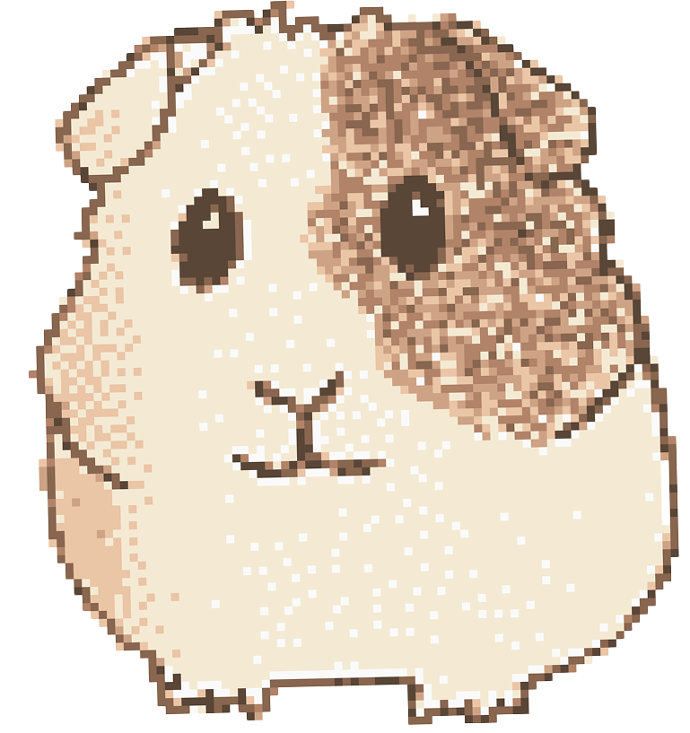
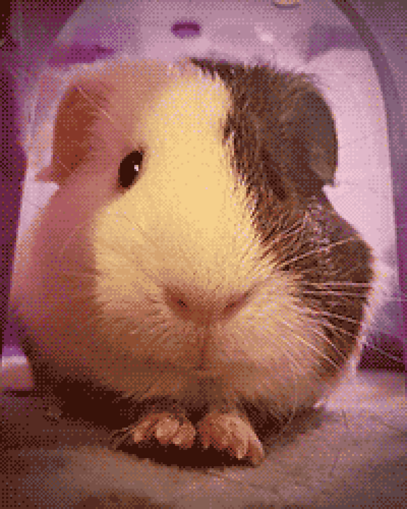
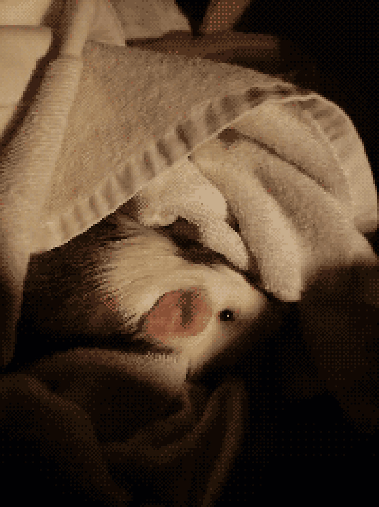
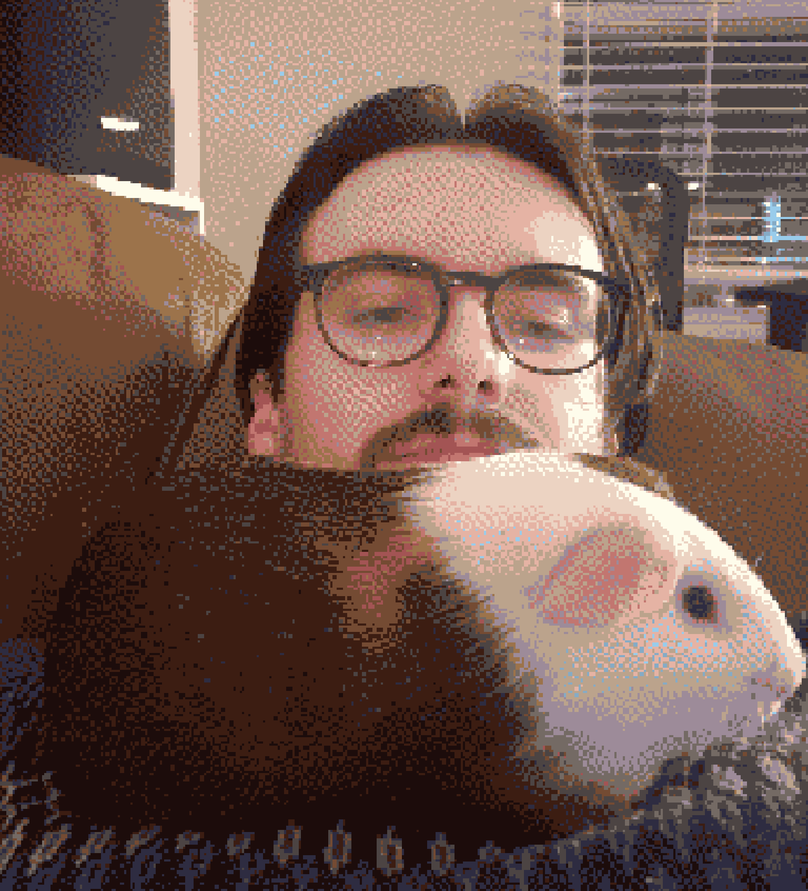
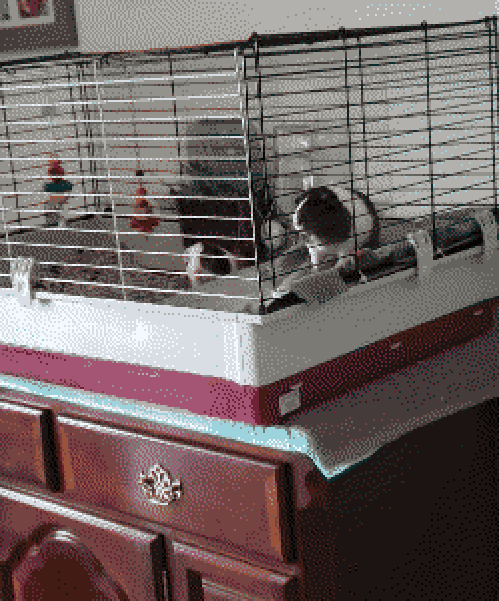
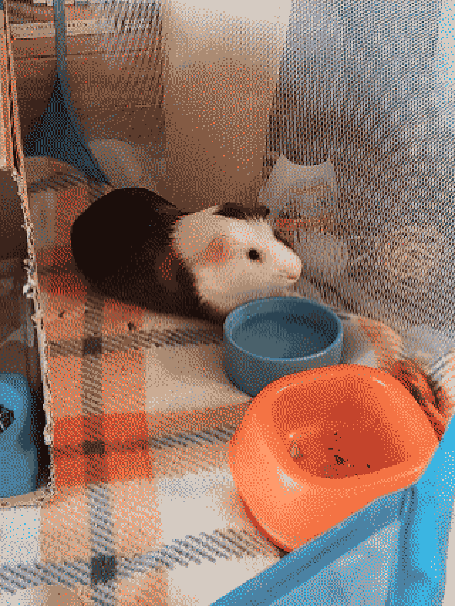
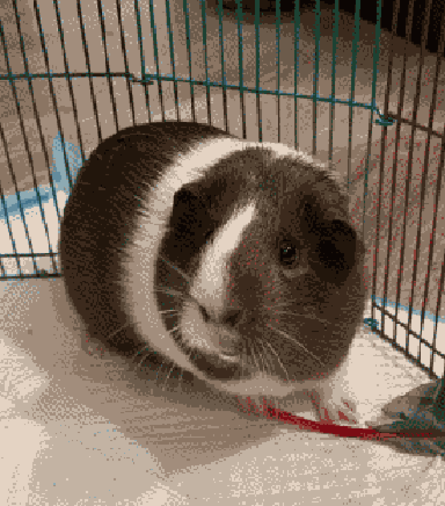

10-03-26: Saving Scooter

If there’s any certainty that has reigned true over the course of my journey as a piggy owner, it’s that the moment one will enter my life is unpredictable and the circumstances almost always…messy. The context in which I brought home my first, a little happy-go-lucky fella named Scooter, no doubt set the tone for this reality.

I had only moved into my own apartment and experienced adult independence for a few short months prior to being contacted by a close friend who knew his living situation was unsustainable and asked if I’d be willing to help him. While it seems silly in hindsight, there was some slight reluctance at the time that this would be something I’d commit to. Even though I knew my living space could provide more peace and safety than his prior arrangements, a part of me felt I was out of my depth.
But despite the doubts, the lack of knowledge about these critters, and really, pet ownership altogether, I ultimately knew in my heart I could and should provide him with some much-needed stability and comfort after the chaos he experienced early in life. Let it be known that saying no to these adorable, potato-shaped rodents has never been in my vocabulary, even from the start.

However, just as it was crucial that I dispel any doubts about my ability to provide Scooter a loving home, so was it crucial I dispel any assumptions that this would be a short-term commitment, or that owning a guinea pig was a “stepping stone” that I could just use the experience from to parlay into a more “serious” pet later down the road. While I certainly know better now, it’s not hard to see where I’d get this idea from. Guinea pigs are continuously marketed and treated as safe beginner pets that require minimal space and effort, whose care requires little oversight, and ultimately have such short lifespans that it doesn’t matter if they face some neglect, when the reality couldn’t be further from the truth. This unfortunate depiction goes beyond guinea pigs, whether it’s fish, reptiles, other rodents, etc. If you get nothing else from reading my posts, I want to instill the belief in you that the creatures we bring into our homes, regardless of shape and size, are equal in the amount of dignity they deserve and the research required to provide said dignity.

Now going back to the messiness of this first rescue, much of it was due to the fact that initially, Scooter was actually a package deal along with his cage mate. Normally, this would actually be an ideal rescue situation, as piggies are social animals and keeping them in pairs is highly recommended. But the day before I was set to take the both of them home, I was notified that Scooter’s friend, who he’d lived with for several months, was actually female and the two of them would have to be immediately separated. For reference, guinea pigs become sexually mature as early as 4 weeks old. Already feeling a slight bit in over my head, I reached a compromise with their owner that I would take Scoot, while the potentially-pregnant female piggy would remain in their care.

When the time came to bring Mr. Scooter to his forever home, I wish I could say it was outfitted with a top-of-the-line living space. Instead, I opted for the unique approach of an octagonal, mesh-lined pop-up playpen, better suited for potty training a puppy than for housing a guinea pig, placed squarely on the carpet in my bedroom. While it was still an upgrade from the cramped, Petco-produced, urine-soaked, prison-esque hunk of wire and plastic he shared with his coed roommate, it still came up quite short of the dimensions now understood to be fit for an adult guinea pig. In time I would soon learn that his humble abode required an upgrade and opt for a C&C-style enclosure, the kind I recommend on the FAQ page, custom-built to the size he needed and deserved.

On occasion I’d look back on my decision to leave behind Scooter’s friend. While it was certainly noble of me to save Scooter, was she not also deserving of the same security and comfort given to him? Were this situation to occur now, I like to think I would take it upon myself to rescue both and, when the time came, seek out loving homes for the offspring. But I also think it’s crucial to confront this savior-esque mentality, something that I continue to wrestle with to this day, with the recognition of where one is at in their pet adoption journey. Successfully navigating the first rescue pig would have to occur before I could face navigating 2, 3, 4, etc.
And as luck would have it, this would not be the last I’d see of this female piggy…